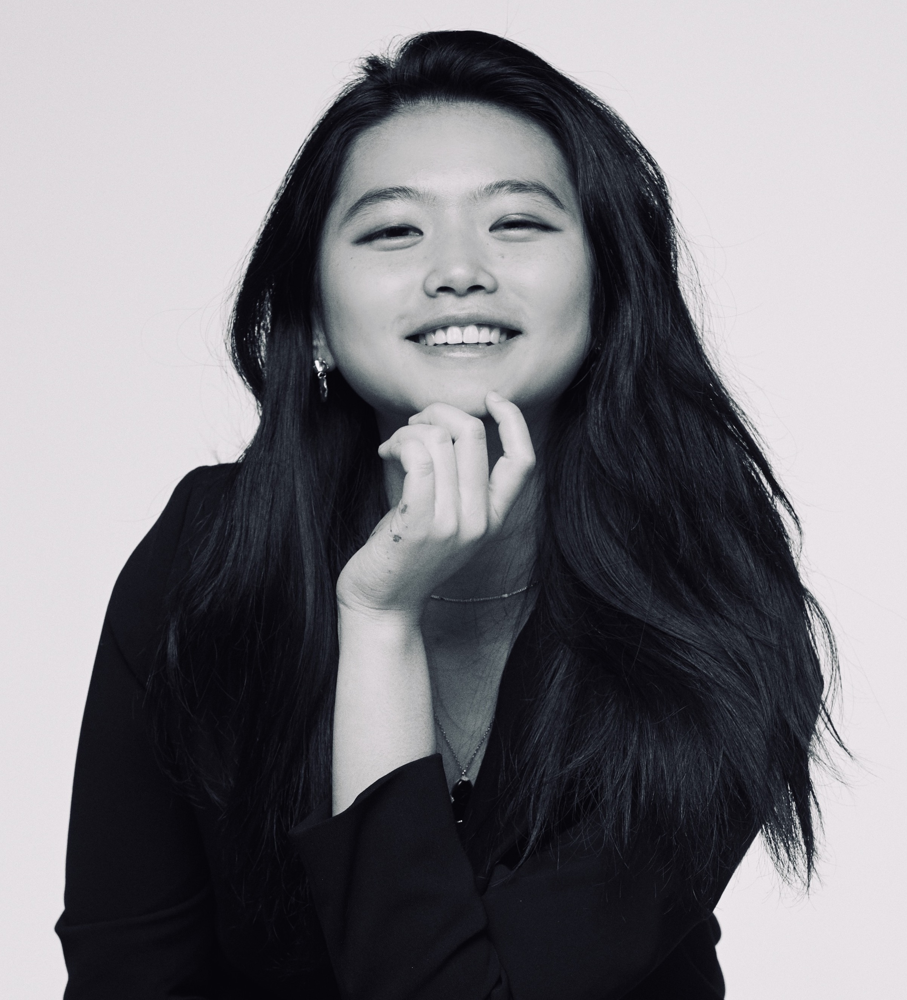

Hi, I'm Jin, a 3rd year PhD student at UCL, supervised by Andrew Saxe.
Broadly, my research focuses on understanding of neural network models and their intelligent behaviors. How does the structure of data and the inductive biases of models shape learning? Particularly, how compositional structure of the tasks (such as skill composition) or data (such as language) might emerge from this interplay. I take multiple approaches such as theory, like tools from statistical physics, or empirical studies of large language models.
Recently, I've been interested in more pressing problem: how can we steer increasingly capable AI systems toward outcomes we actually want? I'm seeking mentorship and community in AI alignment research, driven by a belief that it’s a critical challenge for all of the citizens and it is where my curiosity and skills can make a meaningful contribution.
You can reach me via: jin.lee.22 at ucl dot ac dot uk
Broadly, my research focuses on understanding of neural network models and their intelligent behaviors. How does the structure of data and the inductive biases of models shape learning? Particularly, how compositional structure of the tasks (such as skill composition) or data (such as language) might emerge from this interplay. I take multiple approaches such as theory, like tools from statistical physics, or empirical studies of large language models.
Recently, I've been interested in more pressing problem: how can we steer increasingly capable AI systems toward outcomes we actually want? I'm seeking mentorship and community in AI alignment research, driven by a belief that it’s a critical challenge for all of the citizens and it is where my curiosity and skills can make a meaningful contribution.
You can reach me via: jin.lee.22 at ucl dot ac dot uk
News
• I'm invited to give a talk at COSYNE 2025 workshop on compositionality. See you in
Mont-Tremblant! (2025 Apr)
• I'm invited to visit UPF computational linguistics group led by Marco Baroni, digging up more
linguistic compositionality in LLMs! (2025 Feb)
• I'm giving a tutorial on Theoretical Advances in Continual Learning at COLLAS 2024, in
Pisa. (2024 July)
Research

Distinct Computations Emerge From Compositional
Curricula in In-Context Learning
JH. Lee, A. Lampinen, A. Singh* and A. Saxe*
Workshop on Spurious Correlation and Shortcut
Learning, ICLR 2025


Why Do Animals Need Shaping? A Theory of Task
Composition and Curriculum Learning
JH. Lee, SS. Mannelli, A. Saxe
ICML 2024


Deep Reinforcement Learning for Optimization at Early
Design Stages
Lorenzo Servadei, JH. Lee, JAA. Medina, M. Werner, S.
Hochreiter, W. Ecker, R. Wille
IEEE Design & Test

Out-of-distribution generalization of internal models
is correlated with reward
KS. Mann*, Steffen Schneider*, A. Chiappa, JH. Lee, M.
Bethge, A. Mathis, MW. Mathis
Self-Supervision for Reinforcement Learning
Workshop, ICLR 2021
Learn More
If you want to learn more about me, here is a 2 pages of paper me
And More...
Believe me or not, I chose to live in London where there's absolute absence of mountains but I love
hiking and nature.
I'm on my way to become a climber (but still have a long way to go).
I also play pinao, mostly classical pieces but I am too shy to post any videos of me playing.
I'm a dog person, and I have a dog named Dong Dong(it means nothing but sounds very cute in Korean).
I have opinions on a lot of things, but I try to keep them to in-person converations.
I try not to take myself too seriously.
I'm on my way to become a climber (but still have a long way to go).
I also play pinao, mostly classical pieces but I am too shy to post any videos of me playing.
I'm a dog person, and I have a dog named Dong Dong(it means nothing but sounds very cute in Korean).
I have opinions on a lot of things, but I try to keep them to in-person converations.
I try not to take myself too seriously.
Design from Simple Minimalistic Academic Portfolio.